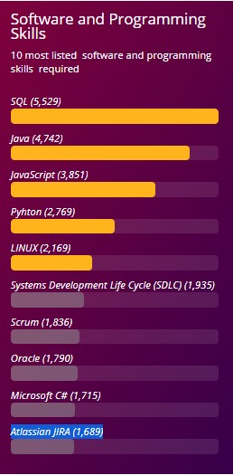
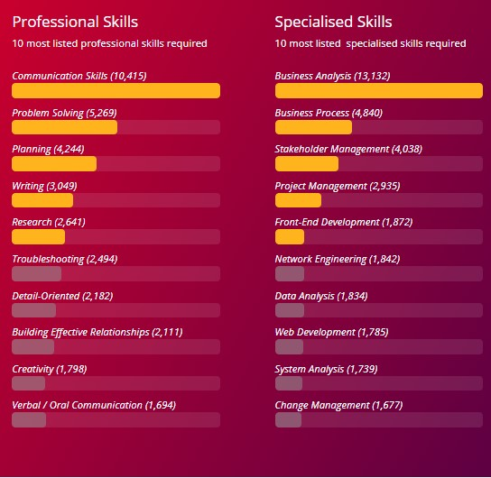

Assignment 2
In our group, Jerin and Simon’s ideal jobs revolve around being programmers for games while EJ and Long are aiming for game development. When ranking these jobs in terms of demand and generalizing them as part of the top 10 careers in IT, Jerin and Simon’s ideal jobs rank 9th while EJ and Longs rank 7th respectively if our ideal jobs are classified as branches Programmers and Software Developers. In terms of ranking these jobs in terms of the demand from employers, there is a slow increase in the demand.
From your group’s ideal jobs, you can identify a set of skills required for these jobs (we will refer to this as your group’s required skill set ). These can be divided into general skills (communication, problem solving, writing etc) and IT-specific skills (Javascript, SQL, etc).
When identifying the relevant skills needed with the ideal jobs, it is important to have a wide range of dexterity. Working as a software developer or programer, there is a need for a balanced set of communication skills as one would probably work in a team. Looking at the top skills in demand from march 2019, it is evident that teamworking, problem solving and organisational skills are important.
The IT-specific skills, such as SQL and Java are being taught at university currently. In terms of ranking, both SQL and Java developing rank as 1#, and 2#. The most demanded generic skills are common among what is being taught in our curriculum and are in line with the skills that are sought after by employers.
In terms of employers' demands, the most important skill is communication skills since the working environment is going to be a team effort, group project so you must be able to communicate to your team, discuss the problems, and brainstorm things together. Furthermore, you will be able to learn from each other. Secondly is Problem solving, Programming is a difficult job where you will be dealing with tons of problems a day, mostly is debugging your codes so being able to solve those problems is a must. Then, planning skill is the next important thing is being able to plan, manage your timetable a good planner will be able to control their work efficiency. Evenmore, it can help the team manage the work flow better.
The three highest ranking IT-specific skills (listed by Burning Glass Technologies) which are not in our group’s required skill set are SQL (ranked #1), SAP (ranked #6) and Business Management (ranked #7) because none of them are needed in the process of developing or programming games. SQL is a programming language designed to be used for managing or storing a large amount of data usually in a business context so is not required for any of us. SAP is an Enterprise Resource Planning software designed for medium-to-large enterprises so is not needed either. And since no one wishes to do a Managerial job, business Management isn't required too.
The three highest ranking generic skills (listed by Burning Glass Technologies) which are not in our group’s required skill set are Mentoring skills (ranked #13), presentation skills (ranked #15) and self-starter skills (ranked #18) as these are rarely used within our ideal jobs. Presentation skills may sometimes come to use as a method to share ideas with peers but it's not crucial for any of our ideal jobs. Similarly, self-starter skills, such as the ability to show initiative and work independently is useful, but our ideal jobs are team-oriented so it isn't required.